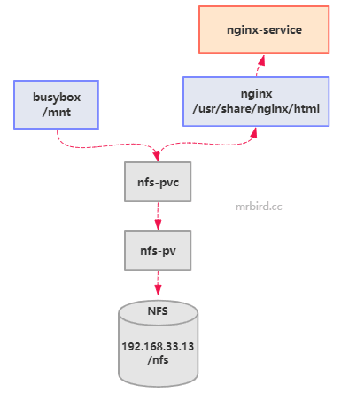
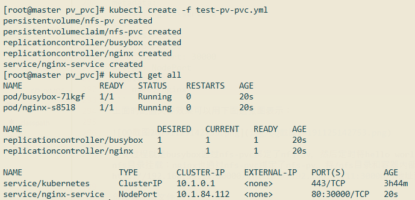
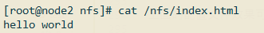
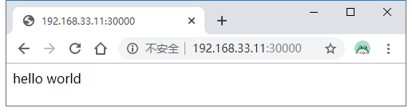

在Kubernetes中，我们虽然可以使用volume将容器内目录挂载到宿主机目录上，但由于Pod调度的不确定性，这种数据存储方式是不牢靠的。对于有状态的应用，我们希望无论Pod被调度到哪个节点上，它们的数据总能够完整地恢复，这时候我们就不能用volume挂载了，而应该使用“网络共享存储”。PV/PVC就是用于解决问题而存在的，它们屏蔽了底层存储实现的细节，使得我们很容易上手使用。
PV
PersistentVolume（PV）是对底层网络共享存储的抽象，将共享存储定义为一种“资源”，Kubernetes支持的PV类型如下：
| 类型 | 描述 |
|---|---|
| AWSElasticBlockStore | AWS公有云提供的ElasticBlockStore |
| AzureFile | Azure公有云提供的File |
| AzureDisk | Azure公有云提供的Disk |
| CephFS | 一种开源共享存储系统 |
| FC（Fibre Channel） | 光纤存储设备 |
| FlexVolume | 一种插件式的存储机制 |
| Flocker | 一种开源共享存储系统 |
| GCEPersistentDisk | GCE公有云提供的PersistentDisk |
| Glusterfs | 一种开源共享存储系统 |
| HostPath | 宿主机目录，仅用于单机测试 |
| iSCSI | iSCSI存储设备 |
| Local | 本地存储设备，从Kubernetes 1.7版本引入，到1.14版本时更新为稳定版，目前可以通过指定块（Block）设备提供Local PV，或通过社区开发的sig-storage-local-static-provisioner插件https://github.com/kubernetes-sigs/sigstorage-local-static-provisioner来管理Local PV的生命周期 |
| NFS | 网络文件系统 |
| Portworx Volumes | Portworx提供的存储服务 |
| Quobyte Volumes | Quobyte提供的存储服务 |
| RBD（Ceph Block Device） | Ceph块存储 |
| ScaleIO Volumes | DellEMC的存储设备 |
| StorageOS | StorageOS提供的存储服务 |
| VsphereVolume | VMWare提供的存储系统 |
举个PV配置文件例子：
1 | apiVersion: v1 |
PV支持的accessModes有：
- ReadWriteOnce（RWO）：读写权限，并且只能被单个Node挂载。
- ReadOnlyMany（ROX）：只读权限，允许被多个Node挂载。
- ReadWriteMany（RWX）：读写权限，允许被多个Node挂载。
不同的存储提供者支持的accessModes：
| Volume Plugin | ReadWriteOnce | ReadOnlyMany | ReadWriteMany |
|---|---|---|---|
| AWSElasticBlockStore | ✓ | - | - |
| AzureFile | ✓ | ✓ | ✓ |
| AzureDisk | ✓ | - | - |
| CephFS | ✓ | ✓ | ✓ |
| Cinder | ✓ | - | - |
| CSI | depends on the driver | depends on the driver | depends on the driver |
| FC | ✓ | ✓ | - |
| FlexVolume | ✓ | ✓ | depends on the driver |
| Flocker | ✓ | - | - |
| GCEPersistentDisk | ✓ | ✓ | - |
| Glusterfs | ✓ | ✓ | ✓ |
| HostPath | ✓ | - | - |
| iSCSI | ✓ | ✓ | - |
| Quobyte | ✓ | ✓ | ✓ |
| NFS | ✓ | ✓ | ✓ |
| RBD | ✓ | ✓ | - |
| VsphereVolume | ✓ | - | - (works when Pods are collocated) |
| PortworxVolume | ✓ | - | ✓ |
| ScaleIO | ✓ | ✓ | - |
| StorageOS | ✓ | - | - |
PV支持的persistentVolumeReclaimPolicy有：
- Retain，不清理, 保留 Volume（需要手动清理）
- Recycle，删除数据，（只有 NFS 和 HostPath 支持）
- Delete，删除存储资源，比如删除 AWS EBS 卷（只有 AWS EBS, GCE PD, Azure Disk 和 Cinder 支持）
PV声明周期：
- Available：空闲状态；
- Bound：已经绑定到某个PVC上；
- Released：对应的PVC已经被删除，但资源还没有被集群收回；
- Failed：PV自动回收失败。
PVC
PersistentVolumeClaim（PVC），对存储资源的需求申请，主要包括存储空间请求、访问模式、PV选择条件和存储类别等信息的设置。只有PVC和PV相匹配，才能绑定上。
定义一个PVC配置：
1 | kind: PersistentVolumeClaim |
该PVC声明了需要1Gi存储空间，访问模式为ReadWriteMany，刚刚定义的PV符合这个要求，所以会被绑定上。
实践
因为NFS类型存储演示起来方便，所以这里选择使用NFS作为存储提供者。
在Kubeadm安装Kubernetes1.16.2集群一节中，我们曾在以下虚拟机上搭建了Kubernetes集群:
| 操作系统 | IP | 角色 | CPU核心数 | 内存 | Hostname |
|---|---|---|---|---|---|
| centos7 | 192.168.33.11 | master | 2 | 4096M | master |
| centos7 | 192.168.33.12 | worker | 2 | 4096M | node1 |
| centos7 | 192.168.33.13 | worker | 2 | 4096M | node2 |
为了方便，这里就不再创建新的虚拟机安装NFS，直接在192.168.33.13节点上准备好NFS环境。
在192.168.33.13节点上执行以下bash命令：
1 | # 创建目录 |
exports内容如下所示：
1 | /nfs *(rw,insecure,sync,no_subtree_check,no_root_squash) |
让配置生效：
1 | exportfs -r |
启动NFS：
1 | systemctl enable nfs |
接着在master节点上，创建test-pv-pvc.yml配置文件：
1 | apiVersion: v1 |
上面的配置文件效果可以用下面这张图表示：

主要过程就是busybox通过nfs-pvc绑定了nfs-pv，然后定时将hello world写到容器内部/mnt/index.html文件中，而容器内部/mnt和PV的/nfs目录挂载；nginx也通过nfs-pvc绑定了nfs-pv，将/nfs目录和容器内部/usr/share/nginx/html目录挂载；我们后续可以通过访问浏览器http://192.168.33.11:30000/地址查看效果。
创建该配置文件:

查看192.168.33.13虚拟机/nfs目录下是否已经存在index.html文件，并查看内容：

浏览器访问http://192.168.33.11:30000/：

说明整个流程没问题。